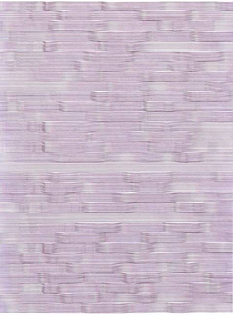

Robotic Arts Intro Fall 2017 (IA277.01)
- Instructor: Lucas Haroldsen (lharoldsen@mica.edu)
- Class Site: yasunaga.work/raif17
- syllabus: syllabus.pdf
- Resources: links.html
09/12: Arduino is here --- [Connecting/Architecture/Digital IO]
How are your day bugs and night bugs?
First things first,
- Let's take a look at what everyone has done with the day bugs and night bugs!
- Documenting the bugs!
Today, we will go over together:
- What is arduino?
- Architecture (hardware) of arduino
- Overview of Arduino IDE (software)
- Basic coding structure
- What is a variable?
- Blinking LEDs with arduino
- Digital input and Digital output
- Conditional logic
- Using switches
and we we will work on:
- Using 2 or more digital outputs
- Using 2 or more switches
- Expanding simple switches
arduino documentary
arduino as a political object name arduino
Italian name arduino on first-names-meanings.com 
Printer Shake by Joe Winter
Ryota Kuwakubo
HOMEWORK
Handmade Switches
-
Make a simple circuit with arduino using the button sketch.
- 1 ---One that uses different parts of the body and its movements and gestures to be activated (other than a simple press)
- 2a --- uses tools or objects to be activated
- 2b --- needs two or more people to be activated
Design 2 switches:
and one that either:
or
Reading
- Medium from Abstracting Craft: The Practiced Digital Hand by Malcolm McCullough
- Come up with two questions from the reading